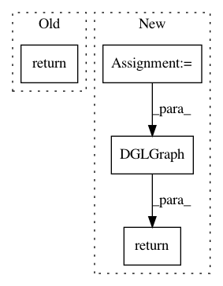

1af0d8064a7f82ca2fa76aaa696c572953f76547,python/dgl/graph.py,,batch,#Any#Any#Any#,4026
Before Change
unbatch
if len(graph_list) == 1:
return graph_list[0]
def _init_attrs(attrs, mode):
Collect attributes of given mode (node/edge) from graph_list.
After Change
if len(graph_list) == 1:
// Need to deepcopy the node/edge frame of original graph.
graph = graph_list[0]
return DGLGraph(graph_data=graph._graph,
node_frame=graph._node_frame.deepclone(),
edge_frame=graph._edge_frame.deepclone(),
batch_num_nodes=graph.batch_num_nodes,
batch_num_edges=graph.batch_num_edges)
def _init_attrs(attrs, mode):
Collect attributes of given mode (node/edge) from graph_list.
In pattern: SUPERPATTERN
Frequency: 3
Non-data size: 4
Instances
Project Name: dmlc/dgl
Commit Name: 1af0d8064a7f82ca2fa76aaa696c572953f76547
Time: 2020-05-08
Author: expye@outlook.com
File Name: python/dgl/graph.py
Class Name:
Method Name: batch
Project Name: dmlc/dgl
Commit Name: 2cdc4d3c1d17e1ac8be1c44ca54d772084c76f18
Time: 2020-03-21
Author: wmjlyjemaine@gmail.com
File Name: tutorials/basics/1_first.py
Class Name:
Method Name: build_karate_club_graph
Project Name: dmlc/dgl
Commit Name: e7679cf2e69ac48cc0c685ad2bf0d87b9cac913b
Time: 2018-10-12
Author: yg1246@nyu.edu
File Name: python/dgl/graph.py
Class Name: DGLGraph
Method Name: line_graph